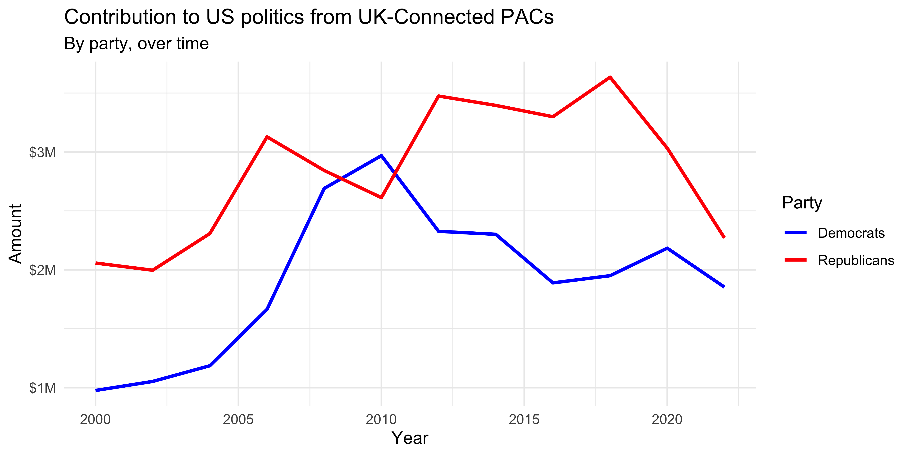

HW 06 - Money in US politics
Photo by Sharon McCutcheon on Unsplash
Every election cycle brings its own brand of excitement – and lots of money. Political donations are of particular interest to political scientists and other researchers studying politics and voting patterns. They are also of interest to citizens who want to stay informed of how much money their candidates raise and where that money comes from.
In the United States, “only American citizens (and immigrants with green cards) can contribute to federal politics, but the American divisions of foreign companies can form political action committees (PACs) and collect contributions from their American employees.”1
In this assignment we will scrape and work with data foreign connected PACs that donate to US political campaigns. First, we will get data foreign connected PAC contributions in the 2022 election cycle. Then, you will use a similar approach to get data such contributions from previous years so that we can examine trends over time.
In order to complete this assignment you will need a Chrome browser with the Selector Gadget extension installed.
Getting started
Go to Posit Cloud and find your homework R Markdown document, open it up and adjust the YAML with your information. Knit the document to make sure it compiles without errors.
Packages
We’ll use the tidyverse package for much of the data wrangling and visualization, the robotstxt package to check if we’re allowed to scrape the data, the rvest package for data scraping, and the scales package for better formatting of labels on visualizations. These packages are already installed for you. You can load them by running the following in your Console:
library(tidyverse)
library(robotstxt)
library(rvest)
library(scales)Data
This assignment does not come with any prepared datasets. Instead you’ll be scraping the data!
Exercises
Data collection via web scraping

The data come from OpenSecrets.org, a “website tracking the influence of money on U.S. politics, and how that money affects policy and citizens’ lives”. This website is hosted by The Center for Responsive Politics, which is a nonpartisan, independent nonprofit that “tracks money in U.S. politics and its effect on elections and public policy.”2
Before getting started, let’s check that a bot has permissions to access pages on this domain.
library(robotstxt)
paths_allowed("https://www.opensecrets.org")## [1] TRUEOur goal is to scrape data for contributions in all election years Open Secrets has data for. Since that means repeating a task many times, let’s first write a function that works on the first page. Confirm it works on a few others. Then iterate it over pages for all years.
Complete the following set of steps in the scrape-pac.R
file in the scripts folder of your repository. This file
already contains some starter code to help you out.
Write a function called
scrape_pac()that scrapes information from the Open Secrets webpage for foreign-connected PAC contributions in a given year (see Footnote 1 for the relevant table). This function should- have one input: the URL of the webpage and should return a data frame.
- rename variables scraped, using
snake_casenaming. - add a new column to the data frame for
year. We will want this information when we ultimately have data from all years, so this is a good time to keep track of it. Our function doesn’t take a year argument, but the year is embedded in the URL, so we can extract it out of there, and add it as a new column. Use thestr_sub()function to extract the last 4 characters from the URL. You will probably want to look at the help for this function to figure out how to specify “last 4 characters”.
Define the URLs for 2022, 2020, and 2000 contributions. Then, test your function using these URLs as inputs. Does the function seem to do what you expected it to do?
Construct a vector called
urlsthat contains the URLs for each webpage that contains information on foreign-connected PAC contributions for every other year starting at 2000 and going up to 2022 (e.g., 2000, 2002, 2004, etc.)Map the
scrape_pac()function overurlsin a way that will result in a data frame calledpac_all.Write the data frame to a csv file called
pac-all.csvin thedatafolder.
Complete the following set of steps in the hw-06.Rmd
file in your repository.
- In your R Markdown file, load
pac-all.csvand report its number of observations and variables using inline code.
Data cleaning
In this section we clean the pac_all data frame to
prepare it for analysis and visualization. We have two goals in data
cleaning:
Separate the
country_parentinto two such that country and parent company appear in different columns for country-level analysis.Convert contribution amounts in
total,dems, andrepubsfrom character strings to numeric values.
The following exercises walk you through how to make these fixes to the data.
Use the
separate()function to separatecountry_parentintocountryandparentcolumns. Note that country and parent company names are separated by/(which will need to be specified in your function) and also note that there are some entries where the/sign appears twice and in these cases we want to only split the value at the first occurrence of/. This can be accomplished by setting theextraargument to"merge"so that the cell is split into only 2 segments, e.g. we want"Denmark/Novo Nordisk A/S"to be split into"Denmark"and"Novo Nordisk A/S". (See help forseparate()for more on this.)End your code chunk by printing out the top 10 rows of your data frame (you can use
head()to do this).Remove the character strings including “$” and “,” in the
total,dems,andrepubscolumns and convert these columns to numeric. End your code chunk by printing out the top 10 rows of your data frame (you can usehead()to do this). A couple hints to help you out:The
$character is a special character so it will need to be escaped.Some contribution amounts are in the millions (e.g. Anheuser-Busch contributed a total of $1,510,897 in 2008). In this case we need to remove all occurrences of “,”, which we can do by using
str_remove_all()instead ofstr_remove().
When you’re done, the first 10 rows of your data should look something like this. Remember: The contents of the table might not be identical because the content of the web site changes over time, but it should close in terms of formatting:
| name | country | parent | total | dems | repubs | year |
|---|---|---|---|---|---|---|
| 7-Eleven | Japan | Ito-Yokado | 8500 | 1500 | 7000 | 2000 |
| ABB Group | Switzerland | Asea Brown Boveri | 46000 | 17000 | 28500 | 2000 |
| Accenture | UK | Accenture plc | 75984 | 23000 | 52984 | 2000 |
| ACE INA | UK | ACE Group | 38500 | 12500 | 26000 | 2000 |
| Acuson Corp (Siemens AG) | Germany | Siemens AG | 2000 | 2000 | 0 | 2000 |
| Adtranz (DaimlerChrysler) | Germany | DaimlerChrysler AG | 10500 | 10000 | 500 | 2000 |
| AE Staley Manufacturing (Tate & Lyle) | UK | Tate & Lyle | 24000 | 10000 | 14000 | 2000 |
| AEGON USA (AEGON NV) | Netherlands | Aegon NV | 58250 | 10500 | 47750 | 2000 |
| AIM Management Group | UK | AMVESCAP | 25000 | 10000 | 15000 | 2000 |
| Air Liquide America | France | L’Air Liquide SA | 0 | 0 | 0 | 2000 |
Data visualization and interpretation
Create a line plot of total contributions from all foreign-connected PACs in the Canada and Mexico over the years. Once you have made the plot, write a brief interpretation of what the graph reveals. Few hints to help you out:
- Filter for only
CanadaandMexico. - Calculate sum of total contributions from PACs for each year for
each country by using a sequence of
group_by()thensummarize(). - Make a plot of total contributions (y-axis) by year (x-axis) where two lines identified by different colors represent each of Canada and Mexico.
- Filter for only
**Note:** The figure you create might look slightly different than this one if the data on the website has been updated recently.- Recreate the following visualization. Once you have made the plot, write a brief interpretation of what the graph reveals. Note that these are only UK contributions. You will need to make use of functions from the scales package for axis labels as well as from ggplot2.

Submitting your work
Once you are happy with the final state of your work, change the YAML
output from html_output to
pdf_output. Now knit the document to produce a final PDF
file. Upload the PDF as a Canvas assignment.
Source: Open Secrets - About.↩︎